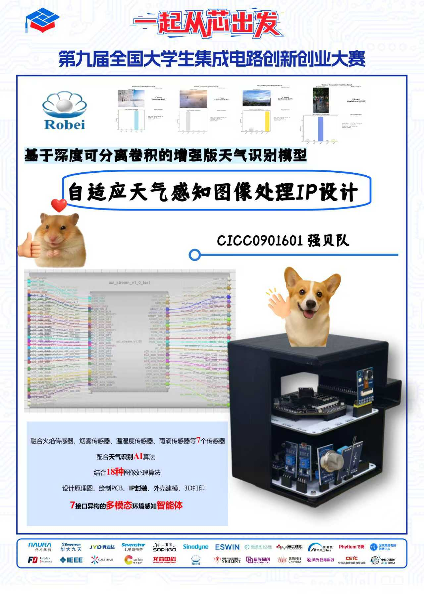
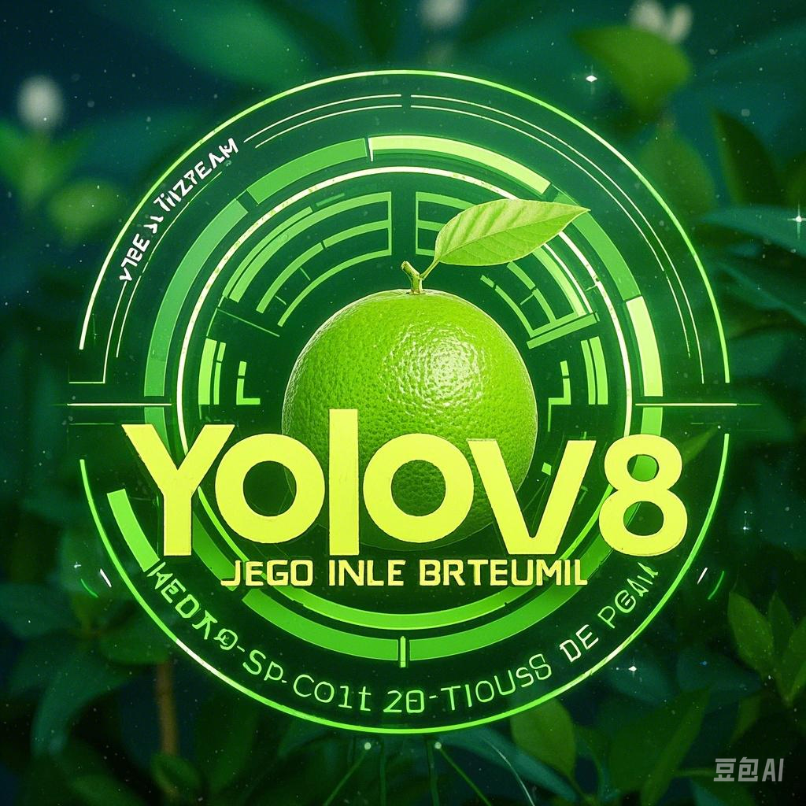
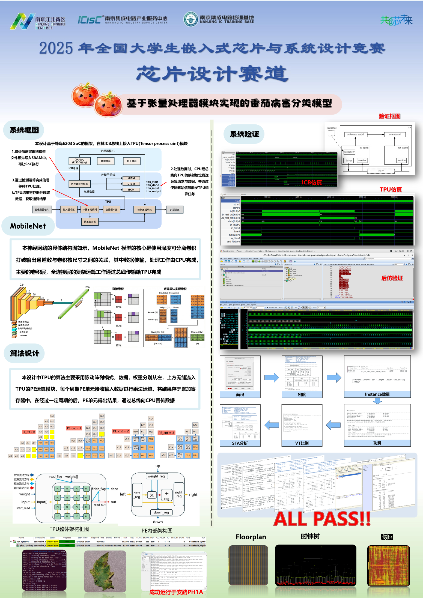

你好，我是胡琳 (Lynn)
华南农业大学 · 电子科学与技术 (GPA: 4.42/5.0)

🎓 基本情况
- 学历背景： 华南农业大学 - 人工智能学院
- 所在专业： 电子科学与技术
- 专业成绩： 专业排名 6/100 | 多次获校一等奖学金
- 专业技能： 精通 C/C++ 与 Verilog，具备扎实的电路设计基础，熟练验证 FPGA 原型系统并掌握硬核嵌入式架构开发
- 英语水平： CET-4 (529), CET-6 (487)
⭐ 个人性格特征
💡 持续热爱与好奇心
对硬件底层逻辑和新技术充满热情，喜欢从0到1搭建系统，乐于深究“为什么”。
🤝 团队精神与责任感
多次在团队竞赛中担任核心研发力量，能够进行良好的沟通协作并稳步推进项目进度。
🔧 极客精神与抗压力
在硬件调试及Bug排查的高压环境下，能保持冷静与耐心，具备较强的问题定位和解决能力。
作品与荣誉库
💻 作品简介
SoC异构架构的图像传输系统 (嵌赛)
第八届全国大学生嵌入式芯片与系统设计大赛 - 国家级一等奖
基于安路PH1A FPGA与SoC的异构协同架构构建全栈式解决方案。FPGA负责全流程ISP硬件加速（涵盖去噪、白平衡等18种图像算法）、低延迟PWM电机驱动与千兆以太网高速流媒体传输；内置SoC边缘侧以及FPGA端分别部署MobileNet和LeNet轻量级神经网络实现目标识别。项目集成了多链路网通控制并自主开发了多功能可视化上位机。
.jpg)
.jpg)
多传感器融合天气图像处理系统 (集创赛)
第九届全国大学生集成电路创新创业大赛 - 华南赛区二等奖
在Zynq Artix-7上落地端到端高性能ISP方案，开发22种图像处理增强算法。通过多字节收发串口程序融合多源环境传感器数据。使用PyQt6开发交互上位机，并在Zynq
7020上部署基于MobileNet的天气识别模型。相关论文目前在投《集成电路与嵌入式系统》。

基于LoRa通信的智能柚园监控系统
第八届全国大学生嵌入式芯片与系统设计大赛
作为团队负责人，统筹项目并设计机械结构。开发基于STM32的小车控制系统，实现精准喷药与基础运动闭环。集成LoRa无线通信解决信号干扰，并引入YOLOv8实现柚子树苗病虫害识别，开发交互网页。获大创“优秀”提前结项及2项软著1项专利。


数字芯片与系统设计 (芯赛)
第八届全国大学生嵌入式芯片与系统设计大赛 - 芯片设计赛道 国家级二等奖
完成数字芯片相关创新设计，涉及RTL代码编写与系统开发验证，最终荣获全国芯片设计赛道国二奖项。并在其中承担了核心开发与验证任务。

面向荔枝病虫害的多智能体协同系统 (大创)
国家级大学生创新训练项目
使用预训练CLIP模型和Faster R-CNN网络实现高精度病虫害识别与定位。独创性以DeepSeek大模型为基座设计多模态定制框架。论文《基于
YOLOv11n-ACE的轻量化荔枝FPN改进病虫害检测方法》以第一作者身份被《农业机械学报》录用。
🏆 经典荣誉与奖项
-
🏆 国家级一等奖
第八届全国大学生嵌入式芯片与系统设计大赛
(FPGA创新设计赛道) -
🥈 国家级二等奖
第八届全国大学生嵌入式芯片与系统设计大赛
(芯片设计赛道) - 🥉 国家级三等奖 2025年中国大学生机械工程创新创意大赛
- 🥉 国家级三等奖 第十八届全国大学生节能减排社会实践与科技竞赛
-
🥈 赛区二等奖
第九届全国大学生集成电路创新创业大赛
(华南赛区) -
🥈 省级二等奖
第十一届“大唐杯”全国大学生新一代信息通信技术大赛
(广东省赛区) - 🥈 创新竞赛二等奖 2025年广东研究生学术论坛“汽车与电子环保”创新竞赛
-
🥉 省级三等奖
第十七届“中国硬件杯”(AIC)全国大学生计算机应用能力与信息素养大赛
(广东省赛区) - 🥉 省级三等奖 第十届“挑战杯”广东大学生课外学术科技作品竞赛
实习经历
嵌入式系统研发实习生
2024年12月 - 2025年5月北京冕巢航天科技有限公司
- 火箭点火器控制系统： 独立负责全流程研发，完成点火系统的时序逻辑与控制程序开发，精准定义触发、监测与应急中断节点。
- 上位机与算法设计： 独立开发 Python 上位机软件（已获软著），实现参数配置及实时监控；设计基于九轴传感器与舵机的火箭姿态控制算法。